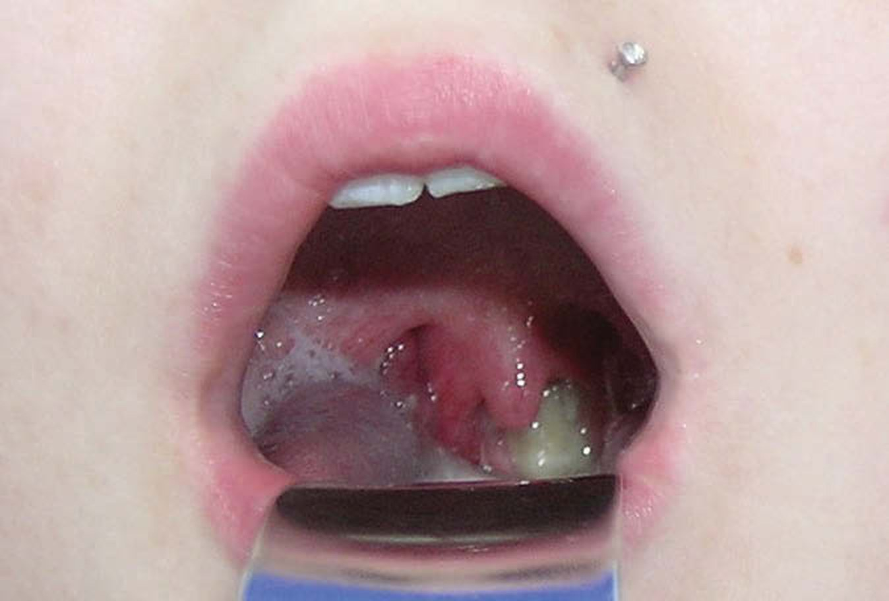
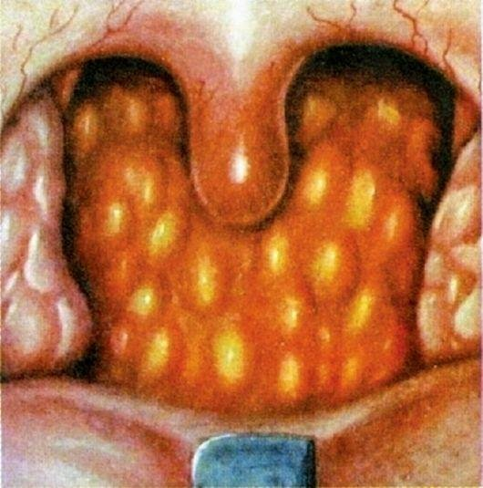
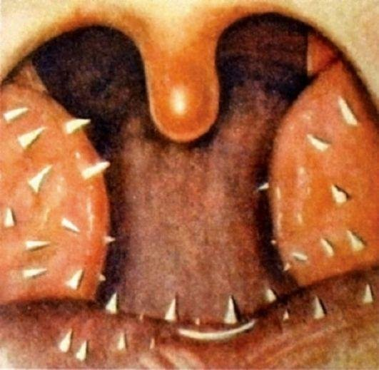

Фарингиты
Фарингит: определение, распространённость, классификация
Определение
Фарингит (лат. pharyngitis) — острое или хроническое воспаление слизистой оболочки и лимфоидной ткани глотки. Синонимы: катар глотки. Код по МКБ-10: J02 Острый фарингит; J31.2 Хронический фарингит. Согласно Международной классификации болезней, фарингит выделяют отдельно от тонзиллита, однако в литературе довольно часто используют объединяющий термин «тонзиллофарингит», учитывающий сочетание двух этих патологических состояний. по: Нац. руководство, 2016, с. 791
Зачастую при остром респираторном заболевании (ОРЗ) наблюдается вовлечение в патологический процесс не только слизистой стенок глотки, но и её лимфоидной ткани (нёбных и язычной миндалин). по: Чарушин и соавт., с. 29
Хронический фарингит (pharyngitis chronica) — хроническое воспаление слизистой оболочки глотки, развивающееся как следствие острого воспаления при неадекватном лечении и неустранённых этиологических факторах. по: Пальчун, Магомедов, Лучихин, учебник, с. 290
Распространённость
Фарингит весьма распространён практически у всех возрастных групп. Пиковая заболеваемость происходит осенью и весной. У детей и подростков чаще встречаются острые формы заболевания. У мужчин фарингит наблюдают чаще. Однако у женщин преобладают субатрофические формы заболевания. по: Нац. руководство, 2016, с. 791
Более 30% пациентов, которые обращаются в ЛОР-кабинеты поликлиник, болеют хроническим фарингитом разных форм. по: Заболотный и соавт., с. 308–309
В детском возрасте он встречается реже, в основном в виде простой и гипертрофической форм. по: Пальчун, учебник для колледжей, с. 135–136
Хронический фарингит составляет 4,7% всех ЛОР-заболеваний, выявляется у 14% школьников. по: Богомильский, Чистякова, с. 311
Классификация
Острый фарингит может быть как самостоятельной нозологической единицей, так и проявлением острых респираторных заболеваний верхних дыхательных путей. В зависимости от этиологического фактора различают вирусный, бактериальный, грибковый, аллергический, травматический острый фарингит, а также вызванный воздействием раздражающих факторов. по: Нац. руководство, 2016, с. 792
Из других форм острого фарингита необходимо упомянуть о гранулезном (воспаление гранул на задней стенке глотки) и боковом фарингите (воспаление боковых валиков за задними нёбными дужками, которые при этом могут быть резко увеличены и даже покрыты фибринозным налетом). по: Солдатов, Гофман, гл. 3
С анатомической точки зрения глотка делится на три отдела — верхний (носоглотка), средний (ротоглотка) и нижний (гортаноглотка). Морфологические изменения слизистой оболочки при хроническом фарингите обычно имеют преимущественную локализацию в одном из анатомических отделов глотки, поэтому развивающийся здесь воспалительный процесс можно подразделить на назофарингит, мезофарингит, гипофарингит. Это деление может быть условным, потому что воспалительный процесс нередко поражает слизистую оболочку диффузно и носит мигрирующий характер. по: Нац. руководство, 2016, с. 792
Хронический фарингит обычно классифицируют по характеру развивающихся в слизистой оболочке глотки морфологических изменений, в связи с чем выделяют:
- катаральный (простой) фарингит;
- гипертрофический фарингит;
- атрофический (субатрофический) фарингит.
по: Нац. руководство, 2016, с. 792
Указанные формы хронического воспаления часто сочетаются. Так, наличие диффузных атрофических изменений в слизистой оболочке может сочетаться с очаговой гиперплазией лимфоидной ткани задней стенки глотки. по: Нац. руководство, 2016, с. 792
В зависимости от глубины и распространённости поражения его определяют как диффузное, ограниченное, катаральное, гранулёзное, гипертрофическое, атрофическое и сочетанное. по: Бабияк и соавт., т. 1, с. 567
Перечень хронических неспецифических заболеваний глотки, которые объединяет локализация и длительное течение, в руководстве Бабияка, Накатиса и Говоруна выглядит так.
Перечень хронических неспецифических (вульгарных) заболеваний глотки. 1. Хронические фарингиты: а) хронический диффузный катаральный фарингит; б) хронический ограниченный катаральный эпи-, мезо- или гипофарингит; в) хронический диффузный гипертрофический фарингит; г) хронический диффузный атрофический фарингит; д) хронический гранулёзный фарингит; е) озена глотки; ж) фарингокератоз. 2. Хроническое воспаление солитарных лимфаденоидных образований глотки: а) хронический тонзиллит; б) хронический аденоидит; в) хроническое воспаление язычной миндалины; г) хроническое воспаление миндалин слуховой трубы. 3. Гипертрофия (невоспалительной природы) солитарных лимфаденоидных образований глотки: а) гипертрофия нёбных миндалин; б) гипертрофия глоточной миндалины (аденоидные вегетации); в) гипертрофия язычной миндалины; г) гипертрофия тубарных миндалин (Gerlach).
Под солитарными лимфаденоидными образованиями понимают отдельные анатомически и физиологически обособленные скопления лимфаденоидной ткани, входящие в лимфаденоидное кольцо Пирогова—Вальдейера.
Характеризуя приведённый перечень заболеваний, следует отметить, что многие из них являются лишь стадиями перехода одних заболеваний в другие. Эти заболевания не представляют собой незыблемую, неизменяющуюся форму патологии, а могут переходить одно в другое в зависимости от множества внутренних и внешних факторов, влияющих на патологический процесс. Так, диффузный катаральный фарингит может иметь своим конечным состоянием ограниченный или диффузный суб- или атрофический фарингит; хронический гипертрофический фарингит может протекать одновременно с хроническим гранулёзным фарингитом, а тонзиллит, достигнув фазы гипертрофии нёбных миндалин и будучи излеченным консервативными методами, сохраняет рубцово-паренхиматозную гипертрофию нёбных миндалин, и т. п. по: Бабияк и соавт., т. 1, с. 566–567, 578
Острый фарингит
Этиология
Острый фарингит как самостоятельное заболевание наблюдается при непосредственном воздействии инфекционного возбудителя или разнообразных раздражителей (горячая или холодная пища, вдыхание холодного воздуха или воздуха, содержащего вредные примеси, производственную пыль; курение, алкоголь, алиментарный раздражитель и т.д.). Когда острый фарингит бывает одним из проявлений острой респираторной вирусной инфекции, он развивается под влиянием тех же причин, что и основное заболевание.
Этиологическим фактором острого фарингита могут быть вирусы, микробные возбудители, грибы. Вирусную этиологию острого фарингита отмечают приблизительно в 70% случаев: возбудителями при этом выступают риновирусы, коронавирусы, респираторный синцитиальный вирус, аденовирусы, энтеровирусы, вирус гриппа, парагриппа и др. В период осенних эпидемий риновирусы ответственны более чем за 80% случаев острых респираторных инфекций. Вирусное инфицирование может быть лишь первой фазой заболевания — оно прокладывает путь для последующей бактериальной инфекции. Из бактериальных возбудителей острого тонзиллофарингита главную роль играют β-гемолитический стрептококк группы А и других групп, с которыми связывают соответственно 31 и 15% всех случаев заболевания. Встречаются такие микроорганизмы, как Streptococcus pneumoniae, Haemophilus influenzae, Mycoplasma, Staphylococcus aureus, Moraxella, Klebsiella и другая микрофлора, обычно обнаруживаемая в носоглотке в непатогенной форме. Острое воспаление глотки может развиться также вследствие аллергического, травматического воздействия, а также под влиянием различных раздражающих факторов: горячее питьё, кислоты, щёлочи, облучение и т.п. по: Нац. руководство, 2016, с. 792–793
Острый фарингит часто возникает и как сопутствующее заболевание при воспалении верхних дыхательных путей, инфекционных заболеваниях, заболеваниях желудочно-кишечного тракта и др.
Предрасполагающими факторами являются общее и местное переохлаждение организма; патология полости носа, околоносовых пазух и носоглотки; общие инфекционные заболевания; дисбактериоз; курение и злоупотребление алкоголем; заболевания желудочно-кишечного тракта. по: Пальчун, Магомедов, Лучихин, учебник, с. 250
Практически все вирусы, вызывающие ОРВИ, могут поражать слизистую оболочку глотки. К наиболее значимым относятся: аденовирусы (виды В, С и Е), вирусы парагриппа (виды 1–4), коронавирусы (сезонные виды (229E, OC43, NL63, HKUI), а также Sars-Cov-2), различные риновирусы, респираторно-синцитиальный вирус, бокавирус и др. Поражение лимфоидной ткани глотки (нёбных, глоточной, язычной миндалин, боковых валиков глотки, фолликулов задней стенки глотки) вызывают вирусы, способные к репродукции в лимфоцитах (лимфотропные вирусы). К ним относят аденовирусы, вирусы из семейства Herpesviridae (вирус Эпштейна — Барр (ВЭБ) и цитомегаловирус). Воспалительный процесс в глотке достаточно часто наблюдается в стадию первичных проявлений ВИЧ-инфекции.
Дрожжеподобные грибы рода Candida при наличии дефектов системного и/или местного иммунитета макроорганизма (при наличии факторов риска) способны поражать структуры полости рта и глотки, выстланные многослойным плоским неороговевающим эпителием, — вызывать орофарингеальный кандидоз. Следует отметить, что в первую очередь в микотический процесс вовлекается слизистая оболочка полости рта: на внутренней поверхности щёк, спинке языка, деснах. Затем отмечается поражение передних нёбных дужек, язычка, мягкого нёба. Изолированный кандидоз задней стенки глотки или нёбных миндалин практически не встречается. по: Чарушин и соавт., с. 29–31
Оно часто сочетается с острым ринитом, ангиной, ларингитом. Острый фарингит часто является симптомом ОРВИ, скарлатины, кори и т. п. Изолированный острый фарингит может возникнуть после общего или местного переохлаждения, от приема острых продуктов питания, у рабочих, только начавших работать на вредных химических предприятиях. по: Заболотный и соавт., с. 307–308
Острое воспаление среднего отдела глотки — мезофарингит (pharyngitis acuta) относят к частым заболеваниям, однако изолированно он встречается редко. Нередко мезофарингит возникает как нисходящее острое воспаление полости носа и носоглотки или сочетается с воспалением в полости рта и миндалин. Общие инфекционные заболевания, а также болезни многих органов и систем, такие как болезни крови, почек и другие, нередко сочетаются с острым фарингитом. по: Пальчун, учебник для колледжей, с. 134
Патогенез
Морфологические изменения при остром фарингите характеризуются отёком и инфильтрацией клеточных элементов слизистой оболочки, расширением и инъецированностью сосудов, десквамацией эпителия. Воспалительная реакция обычно более выражена в местах скопления лимфоидной ткани — в области свода носоглотки, около устьев слуховых труб, на задней и боковой стенках глотки. по: Нац. руководство, 2016, с. 793
Формы острого фарингита
Самой частой инфекцией при бактериальном фарингите является патогенный стрептококк, который играет основную роль в возникновении фолликулярной ангины. В отличие от ранее описанной картины эритематозного фарингита, слизистая оболочка глотки имеет относительно нормальный вид, воспалительным изменениям подвергаются лишь лимфоидные гранулы задней стенки глотки, преимущественно латерально расположенные. Они увеличены в размерах и покрыты слизисто-гнойным налётом. При наличии нёбных миндалин к глоточной патологии присоединяется фолликулярная ангина. Поэтому диагноз истинного острого гранулёзного фарингита может быть поставлен лишь при удалённых нёбных миндалинах.
Первично инфекционный процесс при этой форме фарингита развивается в носоглотке, откуда слизисто-гнойные выделения стекают по задней стенке глотки в гортаноглотку, а затем отхаркиваются или заглатываются. Эти выделения раздражают слизистую задней стенки глотки, создают у больного неприятные ощущения наличия инородного тела, жжения, что побуждает к кашлевому рефлексу, стремлению путём отхаркивания освободиться от этого ощущения. Сильные кашлевые посылы приводят к ослаблению голосовых связок и появлению охриплости. Эта форма фарингита чаще всего возникает у детей, больных острым аденоидитом или синуситом. Аллергический фарингит чаще всего локализуется в носоглотке, слизистая оболочка которой идентична имеющейся в полости носа и подвержена тем же патологическим состояниям. Следовательно, он не может быть идентифицирован как самостоятельное (изолированное) заболевание, а только как процесс, ассоциированный с аллергией слизистой оболочки носа.
По своей природе герпетические заболевания глотки близки к аденови русным болезням, однако отличаются рядом морфологических и клинических особенностей. по: Бабияк и соавт., т. 1, с. 534–535
Клиническая картина
При остром фарингите и обострении хронического больной отмечает неприятные ощущения в носоглотке: жжение, сухость, нередко скопление вязкой слизи, першение и иногда слабо выраженные боли в горле (особенно при «пустом глотке»). При распространении воспаления на оболочку слуховых труб появляется заложенность и боль в ушах. Нередко беспокоит головная боль с локализацией в затылочных областях, возникает затруднение носового дыхания и гнусавость, особенно у детей. Общие симптомы, как правило, выражены незначительно. Больного может беспокоить слабость, головная боль; возможно незначительное повышение температуры. Иногда отмечают увеличение регионарных лимфатических узлов, умеренно болезненных при пальпации. по: Нац. руководство, 2016, с. 794
Иногда больной описывает симптоматику как «ощущение инородного тела в глотке». Болевая симптоматика может усилиться при глотании, иррадиировать в ухо. по: Пальчун, Магомедов, Лучихин, учебник, с. 251
При остром фарингите пациент предъявляет жалобы на дискомфорт, чувство першения, жжение, болезненность в горле, особенно при «пустом глотке», скопление вязкого отделяемого, чувство избыточного слюноотделения. Этиология заболевания определяет выраженность общеинфекционного синдрома, включающего общую слабость, повышенную температуру тела, головную боль и др. Фарингит при ГЭРБ характеризуется преимущественно утренним характером болей, что объясняется длительным нахождением пациента в горизонтальном положении во время ночного сна и попаданием желудочно-кишечного содержимого в глотку. по: Чарушин и соавт., с. 32
Температура тела нормальная или субфебрильная. Боль в горле уменьшается после употребления теплых, не раздражающих блюд. по: Заболотный и соавт., с. 307–308
Больной жалуется на саднение или боли в глотке, першение, сухость, осиплость голоса, а при осмотре отмечается гиперемия слизистой всех отделов глотки, скопление вязкой слизи на задней стенке, иногда геморрагического характера. по: Солдатов, Гофман, гл. 3
Выраженные формы острого фарингита сопровождаются регионарным лимфаденитом, а у детей и повышенной температурой тела. Продолжительность болезни до 2 нед, переход в хроническую форму обычно обусловлен длительным воздействием на слизистую оболочку тех или иных раздражающих факторов. по: Пальчун, учебник для колледжей, с. 135
Фарингоскопия
При фарингоскопии у больного с острым фарингитом и обострением хронического воспаления слизистая оболочка глотки гиперемирована, отёчна. Процесс может распространиться на нёбные дужки, миндалины; нёбная занавеска и язычок могут быть отёчны, увеличены в объёме. Нередко на задней и боковых стенках глотки видны отдельные лимфаденоидные фолликулы в виде ярко-красных округлых возвышений (гранул) — гранулёзный фарингит. Иногда на боковых стенках, сразу за нёбными дужками, можно наблюдать увеличенные в размерах, инфильтрированные лимфаденоидные валики (боковой фарингит). Однако стойкую гипертрофию гранул и боковых валиков часто следует рассматривать как проявление не острого, а обострения хронического фарингита. Местные осложнения острого фарингита могут быть связаны с распространением воспаления на слуховые трубы, полость носа, гортань, а общие — с возникновением или обострением общих заболеваний, таких как ревматизм, артрит, нефрит и др. по: Нац. руководство, 2016, с. 794–795
При вирусном фарингите характерна «зернистая» задняя стенка глотки — множественная гиперплазия её лимфоидных фолликулов, а также выраженная отёчность боковых валиков глотки (боковой фарингит). Слизисто-гнойное отделяемое, стекающее по задней стенке из носоглотки, часто свидетельствует о поражении полости носа и околоносовых пазух, воспалительном процессе в носоглоточной миндалине (аденоидите) и др. В ряде случаев патологический процесс характеризуется образованием афт — поверхностных дефектов слизистой оболочки. по: Чарушин и соавт., с. 32

Особенности у детей
Острый фарингит (воспаление лимфоидной ткани задней стенки глотки) встречается у детей любого возраста. Болезнь начинается обычно с острого ринофарингита с распространением процесса на среднюю часть глотки. Жалобы на сухость, першение в горле, болевые ощущения при глотании, навязчивый кашель. Слизистая оболочка задней стенки глотки ярко гиперемирована, с выраженной сосудистой инъекцией и выступающими воспаленными фолликулами в виде красных зерен. При остром воспалении лимфоидной ткани боковых валиков глотки боль при глотании не резко выражена, повышение температуры незначительное, при фарингоскопии отмечаются гиперемия и припухлость области боковых валиков и язычка. У грудных детей заболевание протекает тяжело, в виде назофарингита, с выраженной лихорадкой, явлениями дисфагии, парентеральной диспепсии, саливацией. При фарингоскопии определяют выраженную воспалительную реакцию мягкого неба с отеком, гиперемией и появлением энантемы. При тяжелом течении заболевания возможно развитие заглоточного абсцесса, гнойного медиастинита. по: Богомильский, Чистякова, с. 274–275
Диагностика
С целью диагностики стрептококковой природы фарингита используют культуральный метод, экспресс-определение стрептококкового антигена, иммунологические исследования. Как правило, берётся мазок из зева, миндалин и нёбных дужек. Чувствительность культурального метода находится в пределах 90–95%, следовательно, иногда требуется повторное проведение посевов при получении отрицательного результата. В настоящее время применяются экспресс-тесты на выявление антигенов стрептококка группы А, чувствительность этих методов невысока, а отрицательный результат теста не исключает наличие фарингита, вызванного стрептококком. по: Нац. руководство, 2016, с. 794
Диагноз ставится на основании патогномоничных данных: жалоб больного на дискомфорт и боль в горле, усиливающуюся при глотании, чувство «першения» в глотке; данных физикального обследования: гиперемии и инфильтрации задней стенки глотки, воспалительном отёке лимфатических структур глотки (фолликулов, боковых валиков глотки) и др. При остром фарингите, учитывая высокую вероятность вирусной этиологии, возможно проведение ПЦР-исследования отделяемого задней стенки глотки для уточнения этиологического фактора и возможного назначения системного противовирусного лечения. При клинических проявлениях тонзиллофарингита необходимо исключить бактериальную этиологию заболевания, прежде всего БГСА-инфекцию. При подозрении на внепищеводные проявления ГЭРБ необходимо направить пациента на фиброгастродуоденоскопию, консультацию к гастроэнтерологу. по: Чарушин и соавт., с. 33
Дифференциальная диагностика
Характерные жалобы, анамнез, типичная фарингоскопическая картина облегчают постановку диагноза при фарингите. Острый фарингит следует дифференцировать от катаральной ангины, поражения глотки при острых инфекционных заболеваниях (корь, скарлатина). Постановка диагноза облегчается при появлении характерных высыпаний на слизистых оболочках, на коже больного ребёнка. При острой респираторной инфекции, в том числе гриппе, помимо глотки поражены другие отделы дыхательной системы. Воспалительный процесс имеет нисходящий характер, более выражена общая реакция организма, наблюдается регионарный лимфаденит. В ряде случаев острый неспецифический ринофарингит приходится дифференцировать с дифтерийным процессом, при котором на поверхности слизистой оболочки бывают трудноснимаемые плёнчатые налёты. Кроме того, при подозрении на дифтерию поставить правильный диагноз помогает исследование отделяемого на дифтерийную палочку. Иногда острый фарингит сочетается с катаральной ангиной.
У детей в редких случаях острый фарингит нужно дифференцировать от гонорейного ринофарингита. Следует учитывать, что гонококковая инфекция вызывает специфическое поражение глаз уже в период новорождённости. Резко выраженная гиперемия слизистой оболочки глотки может наблюдаться при сифилисе. У детей врождённое сифилитическое поражение определяется на втором месяце жизни — сифилиды на ягодицах и вокруг заднего прохода, увеличение печени и селезёнки. Анамнез и соответствующее бактериологическое исследование помогают установить правильный диагноз. Ринофарингит может сопровождать заболевания клиновидной пазухи и задних клеток решётчатого лабиринта. В этом случае дифференциальную диагностику проводят с помощью эндоскопии и рентгенологического исследования. по: Нац. руководство, 2016, с. 795
Нужно помнить, что дифференциальная диагностика острого фарингита достаточно сложна, поскольку с такими же симптомами, а не в виде ангины, могут протекать, например, дифтерия, скарлатина, корь, краснуха и другие инфекционные заболевания. В связи с ростом заболеваемости дифтерией рекомендуется обязательное взятие мазка из глотки на коринебактерии при остром фарингите, а больного при необходимости госпитализируют в инфекционный стационар. по: Солдатов, Гофман, гл. 3
Гиперемия слизистой оболочки задней стенки глотки часто бывает при многих общих инфекциях, начиная с наиболее ранних стадий заболевания. по: Пальчун, учебник для колледжей, с. 135
Лечение
Основная цель лечения — добиться купирования неприятных субъективных ощущений в глотке и нормализации фарингоскопической картины.
Лечение обычно проводят в амбулаторных условиях. Больным, чья трудовая деятельность связана с воздействием различных неблагоприятных факторов, усугубляющих течение фарингита, может быть рекомендовано освобождение от работы на период лечения. Госпитализация в инфекционное отделение с боксированной палатой может потребоваться лишь при тяжёлом течении респираторной инфекции, а также в тех случаях, когда острое инфекционное заболевание, одним из проявлений которого явился воспалительный процесс в глотке, контагиозно и представляет опасность для окружающих (дифтерия, корь, скарлатина).
Лечение острого фарингита следует начинать с исключения раздражающей (горячей, холодной, кислой, острой, солёной и т.п.) пищи, газированных напитков. Среди первоочередных назначений также запрет курения, алкоголя, рекомендация соблюдать голосовой режим.
Местное лечение заключается в назначении препаратов, обладающих антисептическим, противовоспалительным, болеутоляющим действием. Для полосканий горла широко используют настой шалфея, ромашки, сочетание экстрактов цветков календулы лекарственной, цветков ромашки аптечной и травы тысячелистника обыкновенного; гексэтидин, бензилдиметил миристоиламино-пропиламмоний, эвкалипта прутовидного препарат и др. Эффективна при инфекционной природе фарингита пульверизация глотки различными аэрозолями: фузафунгином, прополисом, дексаметазоном + неомицином + полимиксином В, повидон-йодом + аллантоином, биклотимолом, стопангином, бензидамином. Находят применение различные местные антисептики в виде таблеток (антиангин, амилметакрезол + дихлорбензиловый спирт, амбазон и др.), пастилок (диклонин), леденцов или драже (стрепсилс, ацетиламинонитропропоксибензен) для рассасывания во рту. Обычно таблетки, леденцы или пастилки для рассасывания имеют сравнительно низкую активность, их назначают при лёгких формах заболевания.
Препараты, в состав которых входит йод (повидон-йод, повидон-йод + аллантоин), а также содержащие растительные антисептики и эфирные масла (ротокан, септолете), хотя и эффективны, но их назначение противопоказано страдающим аллергией. Число таких пациентов в некоторых географических зонах составляет до 20% и более. Выбор оптимального местного антибактериального средства определяется спектром его антимикробной активности, отсутствием аллергенности и токсического эффекта. Однако в ряде случаев даже самые эффективные местные препараты не заменяют полностью потребности в системной антибактериальной терапии, особенно при сочетании фарингита и ангины, вызванных β-гемолитическим стрептококком. Системная антибиотикотерапия показана для предупреждения гнойных осложнений, нисходящей инфекции в случаях выраженной общей реакции с высокой температурой. Препаратами выбора в таких случаях являются антибиотики пенициллиновой группы, макролиды, цефалоспорины. по: Нац. руководство, 2016, с. 796–797
При повышении температуры тела показаны антибактериальные средства как с целью профилактики гнойных осложнений, нисходящей инфекции, так и для снижения риска ревматических осложнений. Препаратом выбора в таких случаях является пенициллин (феноксиметилпенициллин) как наиболее чувствительный препарат к стрептококкам группы А. по: Пальчун, Магомедов, Лучихин, учебник, с. 252
С другой стороны, в связи с небактериальной природой многих форм фарингита, появлением всё большего числа резистентных штаммов бактерий, а также нежелательными эффектами общей антибиотикотерапии местное назначение препаратов, обладающих широким спектром антимикробной активности, во многих случаях является методом выбора. В лечении острого фарингита используют также иммуномодуляторы: лизатов бактерий смесь и др. Они активируют фагоцитоз, способствуют привлечению в очаг воспаления иммунокомпетентных клеток, повышают содержание лизоцима и секреторного IgA в слюне. При необходимости иммуномодуляторы хорошо сочетаются с местными или системными антибиотиками, способствуя сокращению сроков выздоровления и поддержанию местной иммунной защиты, что особенно важно при антибиотикотерапии. При аллергической природе фарингита назначают антигистаминные препараты.
При получении результатов культурального исследования, подтверждающего стрептококковую природу заболевания, и признаках интоксикации может применяться системная антибиотикотерапия пенициллином, амоксициллином, макролидами и др. по: Нац. руководство, 2016, с. 797–798
Даже без лечения через 3–5 дней наступает выздоровление. Можно проводить ингаляции или пульверизацию глотки щелочными растворами, 5% раствором сульфацетамида или антибиотиками. Назначают аэрозоли, таблетки для рассасывания, дезинфицирующие полоскания (фурацилин, этакридина лактат, настои лекарственных растений). по: Заболотный и соавт., с. 308
Для лечения острого фарингита рекомендуются масляно-бальзамические капли в нос, смесь в равных количествах облепихового, вазелинового и ментолового масла 3–5 раз в день, теплые щелочные ингаляции, смазывание слизистой глотки раствором Мандля (раствор Люголя на глицерине), внутрь анальгетики, аспирин. по: Солдатов, Гофман, гл. 3
Лечение состоит в исключении раздражающей пищи, назначении ингаляций и пульверизации теплыми щелочными и антибактериальными растворами; при повышенной температуре тела показаны антибактериальные препараты, препараты парацетамола или ацетилсалициловая кислота внутрь. Заболевание имеет склонность к переходу в хроническую форму, поэтому необходимо тщательное лечение острого процесса. по: Пальчун, учебник для колледжей, с. 135
Профилактика
Профилактику острого фарингита проводят с учётом основных патогенетических факторов. Необходимо исключать переохлаждение организма и воздействие сквозняков, а также раздражение слизистой оболочки глотки агентами алиментарной природы. Профилактические мероприятия представлены общим и местным закаливанием организма холодом, своевременным лечением гнойно-воспалительных заболеваний полости носа, околоносовых пазух и носоглотки. Немаловажное значение имеет санация полости рта. по: Нац. руководство, 2016, с. 791
Прогноз
Прогноз благоприятный. по: Солдатов, Гофман, гл. 3
Острый ринофарингит (эпифарингит)
Возникновение острого ринофарингита, или эпифарингита (rhinopharyngitis acuta), в большей части случаев обусловлено распространением воспаления из нижней части глотки и носовой полости при остром воспалении глотки, носа и околоносовых пазух и обострениях хронического воспаления. В ряде случаев острое воспаление верхней трети глотки бывает первичным и распространяется на слизистую оболочку носа и нижние отделы глотки, чаще это бывает при гипертрофии глоточной (носоглоточной, или III) миндалины, то есть при аденоидах. Этиологическими факторами острого ринофарингита могут быть переохлаждение, вирусная или бактериальная инфекция.
Больные жалуются на неприятные ощущения в носоглотке — жжение, покалывание, сухость, нередко на скопление слизистого отделяемого, которое иногда приобретает кровянистый вид и трудно отходит из носоглотки. В случаях распространения воспаления на слизистую оболочку слуховых труб появляются пощелкивание и боль в ушах, понижение слуха по типу ухудшения звукопроведения. У взрослых назофарингит обычно протекает без повышения температуры тела; в детском возрасте температурная реакция часто бывает значительной, особенно при распространении воспаления на гортань и трахею по типу острой респираторной инфекции. Шейные и затылочные регионарные лимфатические узлы чаще увеличены. Острый неспецифический ринофарингит отличается от дифтерийного процесса отсутствием налета; при подозрении на дифтерию исследование отделяемого на дифтерийную палочку поможет установить диагноз. Врожденный сифилитический и гонококковый насморк и ринофарингит встречаются чрезвычайно редко; они сочетаются с другими признаками этих заболеваний. Продолжительность заболевания может быть от нескольких дней до 2 нед.
Лечение проводится так же, как при остром насморке. Хорошее действие оказывает вливание в каждую половину носа по 5 капель 2% (детям) и 5% (взрослым) раствора серебра протеината или коллоидного серебра 3 раза в день. При выраженном воспалении в течение нескольких дней вливают в нос капли 0,25% раствора серебра нитрата, а затем сосудосуживающие капли. Показаны витаминотерапия и физиотерапия, в частности кварц на подошвы ног и общий, УВЧ на область носа. по: Пальчун, учебник для колледжей, с. 133–134
Хронический фарингит
Этиология
Развитие хронического фарингита в большинстве случаев обусловлено местным длительным раздражением слизистой оболочки глотки. Способствуют возникновению хронического фарингита повторные острые воспаления глотки, хронический тонзиллит, длительно текущие воспалительные заболевания носа и околоносовых пазух, нарушение носового дыхания. При постоянно затруднённом носовом дыхании фарингит может быть вызван не только переходом на дыхание через рот, но и злоупотреблением сосудосуживающими каплями, которые стекают из полости носа в глотку и оказывают там анемизирующий эффект. Симптомы хронического фарингита могут развиться при так называемом постназальном синдроме, когда происходит стекание патологического секрета из полости носа или околоносовых пазух по задней стенке глотки.
К развитию хронического фарингита может привести воздействие неблагоприятных климатических и экологических факторов (пыль, горячий, сухой или задымлённый воздух, химические вещества), курение, злоупотребление алкоголем и т.п. Причиной заболевания могут быть болезни желудочно-кишечного тракта (хронический гастрит, холецистит, панкреатит, дисбактериоз кишечника). Например, к развитию хронического фарингита нередко приводит попадание кислого желудочного содержимого в глотку во время сна при гастроэзофагеальном рефлюксе и грыже пищеводного отверстия диафрагмы.
К развитию хронического фарингита могут привести эндокринные и гормональные нарушения (менопауза, гипотиреоидизм), аллергия, гипо- или авитаминоз А, кариес зубов, употребление алкоголя, острой раздражающей и чрезмерно горячей или холодной пищи. Сахарный диабет, сердечная, лёгочная и почечная недостаточность также могут быть причиной развития хронического фарингита. Наконец, хронический фарингит может возникнуть и при ряде хронических инфекционных заболеваний, например при туберкулёзе. по: Нац. руководство, 2016, с. 793
В качестве этиологических факторов выступает разнообразная бактериальная флора, гнездящаяся в криптах и паренхиме лимфаденоидных образований носоглотки и глотки, активизация которой возникает после аденовирусной инфекции, резко ослабляющей местный тканевый иммунитет.
К общим причинам и способствующим факторам относятся болезни обмена веществ, конституциональная предрасположенность к заболеваниям слизистой оболочки ВДП и лимфаденоидного аппарата глотки, гемодинамические нарушения в области ВДП, обусловленные заболеваниями сердечно-сосудистой системы, печени, почек, лёгких. по: Бабияк и соавт., т. 1, с. 567–568
Слизистая оболочка глотки по сравнению с пищеводом менее защищена от повреждающего действия желудочного секрета, который характеризуется в атипичном локусе ещё и значительно более долгой инактивацией, что вместе обусловливает высокую вероятность повреждения и хронического воспаления. по: Чарушин и соавт., с. 31
Хроническое воспаление слизистой оболочки глотки поддерживают хронические заболевания пищеварительного канала (хронический гастрит, энтерит, колит), печени, поджелудочной железы, матки и ее придатков, эндокринной системы (диабет, гипертиреоз). Очень часто хронический фарингит возникает у больных с разными неврозами, а симптоматология хронического фарингита ухудшает ход невроза. по: Заболотный и соавт., с. 308–309
Развитию заболевания способствуют длительное раздражение слизистой оболочки задней стенки глотки в результате ротового дыхания, ее инфицирование со стороны полости рта (стоматит, лакунарная ангина, хронический тонзиллит, аденоидит) и околоносовых пазух, при заболевании которых гнойные выделения стекают в носоглотку, раздражая и вызывая ее воспаление. Имеют значение частые острые респираторно-вирусные заболевания, особенно грипп, аденовирусная инфекция, аллергические реакции; операции на лимфоидном глоточном кольце в период активного иммуногенеза, особенно тонзиллэктомия в возрасте от 3 до 7 лет, так как она стимулирует компенсаторное разрастание лимфоидной ткани задней стенки глотки. Нёбные миндалины в этом возрасте можно удалять только по строгим показаниям. Заболевание чаще наблюдается у детей, живущих в крупных индустриальных городах, в местностях с резкими колебаниями температуры, в жарких, сухих, запыленных районах. по: Богомильский, Чистякова, с. 311
Часто это бывает при воздействии бытовых и профессиональных факторов, в том числе алкоголя, курения, загрязнения воздуха пылью (особенно цементом), едкими химическими веществами. В последние годы отмечено и влияние радиоактивных примесей в воздухе (Чернобыльская авария). по: Солдатов, Гофман, гл. 3
В ряде случаев причиной заболевания могут быть болезни обмена веществ (у детей диатез, у взрослых диабет и др.), застойные явления при заболеваниях сердечно-сосудистой системы, желудочно-кишечного тракта, печени, болезни кроветворных органов, мочеполовой системы и др. по: Пальчун, учебник для колледжей, с. 135–136
Патогенез
При катаральной форме хронического фарингита выявляется стойкая диффузная венозная гиперемия, пастозность слизистой оболочки за счёт расширения и стаза вен малого калибра; при этом наблюдается периваскулярная клеточная инфильтрация. Гипертрофическая форма фарингита характеризуется утолщением всех слоёв слизистой оболочки, увеличением числа рядов эпителия. Слизистая оболочка становится толще и плотнее, кровеносные и лимфатические сосуды расширены, в периваскулярном пространстве определяются лимфоциты. Лимфоидные образования, рассеянные по слизистой оболочке в норме в виде едва заметных гранул, значительно утолщаются и расширяются, часто за счёт слияния соседних гранул; отмечается гиперсекреция, слизистая оболочка гиперемирована. Гипертрофический процесс может быть локализован преимущественно на задней стенке глотки (гранулёзный фарингит) или на боковых её отделах (боковой гипертрофический фарингит). Для атрофического хронического фарингита характерно резкое истончение и сухость слизистой оболочки глотки; в выраженных случаях она блестящая, «лакированная». Величина слизистых желёз и их число уменьшены; наблюдается десквамация эпителиального покрова. по: Нац. руководство, 2016, с. 793–794
В патогенезе заболевания важную роль играет риносинусная инфекция и нарушение носового дыхания, что исключает из акта дыхания защитные функции слизистой оболочки носа и обусловливает контакт поступающего в дыхательные пути воздуха со слизистой глотки. Дыхание через рот отрицательно влияет на ткани глотки. В конечном счете это приводит к нарушениям местного обмена веществ, гипоксии, высыханию защитного слоя слизи, содержащей биологически активные вещества, защищающие слизистую глотки от вредных атмосферных факторов, наконец, нарушает клеточный гомеостаз и местный иммунитет. Все эти факторы, действуя на разные элементы слизистой оболочки, вызывают патоморфологические изменения, находящие отражение в клинических наименованиях различных форм фарингита.
Эта форма фарингита чаще всего служит следующей стадией развития хронического диффузного катарального фарингита, обусловленной описанными ранее причинами. Чаще всего гипертрофию лимфаденоидных образований глотки трактуют как компенсаторную (защитную) реакцию, увеличивающую объём структур местного клеточного иммунитета.
Рассматривая хронический атрофический фарингит как финальную стадию всех предшествующих форм хронического фарингита, следовательно как результат банального воспалительного процесса, в котором решающую роль играет хроническая назо-фарингеальная патология, не следует забывать о так называемом эссенциальном, или генуинном, атрофическом фарингите как о первичном конституциональном заболевании, входящем как синдром в системное дистрофическое заболевание желудочно-кишечного тракта. Квалифицированный ЛОР-специалист, определив у больного атрофический фарингит, всегда поинтересуется состоянием его пищеварительной системы и во многих случаях больной сошлётся на имеющиеся у него те или иные заболевания в этой области. Следует также заметить, что при хронических колитах, напротив, наблюдаются хронические катаральные фарингиты, лечение которых должно быть тесно увязано с лечением основного заболевания. по: Бабияк и соавт., т. 1, с. 568–571
Клиническая картина
Для хронического фарингита не характерно повышение температуры и существенное ухудшение общего состояния. Катаральная и гипертрофическая формы воспаления характеризуются ощущением першения, щекотания, саднения, неловкости в горле при глотании, ощущением инородного тела, не мешающего приёму пищи, но заставляющего часто производить глотательные движения. При гипертрофическом фарингите все эти явления выражены в большей степени, чем при катаральной форме заболевания. Иногда возникают жалобы на закладывание ушей, которое исчезает после нескольких глотательных движений.
Основные жалобы при атрофическом фарингите представлены ощущением сухости в глотке, нередко затруднением глотания, особенно при так называемом пустом глотке, и часто неприятным запахом изо рта. У больных нередко возникает желание выпить глоток воды, особенно при продолжительном разговоре. Необходимо отметить, что не всегда жалобы больного соответствуют тяжести процесса: у одних при незначительных патологических изменениях и даже при видимом отсутствии их возникает ряд неприятных побочных ощущений, которые заставляют больного длительно и упорно лечиться, а у других, наоборот, выраженные изменения слизистой оболочки протекают почти незаметно. по: Нац. руководство, 2016, с. 794
Воспаление слизистой оболочки глотки носит вялый характер, проявляется непостоянным ощущением болей, сухости и дискомфорта в глотке, быстрой утомляемостью голоса. по: Солдатов, Гофман, гл. 3
Изолированный фарингит у детей наблюдается редко и чаще возникает как нисходящий воспалительный процесс в области носа, носоглотки, а также сопутствует хроническому тонзиллиту, что объясняется однородностью анатомического строения слизистой оболочки дыхательных путей. по: Богомильский, Чистякова, с. 311–312
Фарингоскопия
При катаральной форме хронического фарингита отмечают умеренно выраженную застойную гиперемию, некоторую отёчность и утолщение слизистой оболочки; местами поверхность задней стенки глотки покрыта вязкой слизью. Гипертрофический фарингит, помимо описанных выше признаков, нередко характеризуется слизисто-гнойными выделениями, стекающими по задней стенке глотки. Для гранулёзного фарингита характерно наличие на задней стенке глотки гранул — полукруглых возвышений величиной с просяное зерно тёмно-красного цвета, расположенных на фоне гиперемированной слизистой оболочки, поверхностных ветвящихся вен. Боковой фарингит выявляется в виде тяжей различной толщины, расположенных за задними нёбными дужками. Для атрофического процесса характерна истончённая, сухая слизистая оболочка, бледно-розового цвета с тусклым оттенком, покрытая местами корками, вязкой слизью. На блестящей поверхности слизистой оболочки могут быть видны инъецированные сосуды. При обострении хронического фарингита указанные изменения сопровождаются гиперемией и отёком слизистой оболочки, однако скудность объективных данных часто не соответствует выраженности симптомов, беспокоящих больного. по: Нац. руководство, 2016, с. 795

Нередко нёбные и язычная миндалины находятся в состоянии хронического воспаления и могут быть первопричиной хронического фарингита. по: Пальчун, учебник для колледжей, с. 136–137
Формы хронического фарингита
Ниже по каждой форме собраны жалобы и фарингоскопические признаки из других книг, которых нет в описании национального руководства выше.
Хронический катаральный фарингит
Эта форма фарингита представляет собой тотальное катаральное воспаление глотки, включая и слизистую оболочку носоглотки, нередко слуховой трубы и особенно выводных протоков передних придаточных пазух носа. Заболевание чаще встречается в детском возрасте в связи с более значительным развитием лимфаденоидного аппарата — гнездилища хронической инфекции — и реже у взрослых, у которых этот аппарат в значительной степени атрофирован. Субъективные признаки вне обострения у детей отсутствуют, у взрослых проявляются умеренными жалобами на першение в горле, вязкие трудно отхаркиваемые выделения, повышенный рвотный рефлекс при скоплении корок, кашель. Больные часто прибегают к полосканию горла в ночное время. В утренние часы отмеченные симптомы более выражены. по: Бабияк и соавт., т. 1, с. 568
Больные жалуются на ощущение инородного тела в горле, выделение слизи, а также изжогу. Часто хронический воспалительный процесс переходит на задние нёбные дужки, язычок. У некоторых больных резко отекший увеличенный язычок опускается в гортанный отдел глотки, поэтому они могут спать только в определенном положении. Иногда слизистая оболочка глотки приобретает сизый оттенок или покрывается сизыми пятнами, что свидетельствует о выраженных вазомоторных нарушениях. по: Заболотный и соавт., с. 309
Симптомы: ощущение першения, саднения, инородного тела в горле, умеренные боли при проглатывании слюны, усиление боли после приема острой, горячей или холодной пищи; скопление в глотке большого количества вязкого слизистого отделяемого, что вызывает постоянную необходимость откашливаться и отхаркиваться. Откашливание особенно сильно по утрам и иногда сопровождается тошнотой и рвотой. При фарингоскопии выявляются характерная разлитая гиперемия и отечность слизистой оболочки глотки (задней стенки глотки, мягкого неба и язычка), которые усиливаются, в частности, во время простудных заболеваний или обострения процесса в желудочно-кишечном тракте. по: Овчинников, Гамов, с. 202–203
При фарингоскопии на фоне общей не очень яркой гиперемии слизистой оболочки определяются на задней стенке глотки — нёбной занавеске — вязкие слизистые отложения, с трудом удаляемые пинцетом. В холодное время года гиперемия слизистой усиливается, количество слизистых выделений увеличивается и они становятся более жидкими. При инфицировании глотки аденовирусами или бактериями (собственной условно-патогенной флорой) слизистые выделения приобретают слизисто-гнойный характер — и воспаление приобретает клинические признаки острого или подострого бактериального диффузного фарингита.
Хронический гипертрофический фарингит
Клинически же гипертрофический фарингит рассматривается как аденофарингит, обусловленный и поддерживаемый всё той же риносинусной или аденоидной хронической инфекцией. Поэтому многие лица, страдающие хроническим гипертрофическим фарингитом, предъявляют жалобы на снижение слуха. по: Бабияк и соавт., т. 1, с. 568–569
Пациентов беспокоит нерезкая боль в глотке, необходимость постоянно отхаркивать густую слизь. Часто эти две формы у одного больного объединяются. Резкая гипертрофия гранул, боковых валиков и язычной миндалины иногда наблюдается у лиц, у которых удалены нёбные миндалины. При обострении процесса на гипертрофированных лимфаденоидных образованиях можно увидеть желтоватые и беловатые точки (нагноившиеся фолликулы) или белый фибринозный налет. по: Заболотный и соавт., с. 309
У детей младшего возраста чаще наблюдается хронический гранулезный фарингит, у детей старшего возраста одновременно вовлекается в патологический процесс лимфоидная ткань боковых глоточных валиков. Гипертрофия слизистых желез сопровождается увеличением количества вязкого слизистого отделяемого, которое вследствие ротового дыхания быстро засыхает, образуя корочки. Гранулы проявляются в виде островков гипертрофии лимфоидной ткани на широком основании, что совпадает с общей гипертрофией кольца Пирогова — Вальдейера. При боковом гипертрофическом фарингите выявляются длинные тяжи лимфоидной ткани позади инфильтрированных задних нёбных дужек, что нередко сопровождается звукопроводящей тугоухостью из-за закрытия устьев слуховых труб. по: Богомильский, Чистякова, с. 311–312
Для гипертрофического фарингита характерно увеличение гранул на задней стенке глотки до размера чечевичного зерна (гранулезный фарингит) или боковых валиков (боковой фарингит). по: Солдатов, Гофман, гл. 3
При гипертрофическом гранулезном процессе отмеченные изменения выражены в большей мере, заметнее застойные явления: видны поверхностные ветвящиеся вены, гиперемия, отечность и слизь на задней стенке глотки. Для гранулезного фарингита характерны округлые или продолговатые лимфаденоидные образования красного цвета размером до 3–5 мм или в виде почти одинаковых красных зерен. При боковом гипертрофическом фарингите происходит гипертрофия лимфаденоидной ткани глотки, находящейся в боковых складках позади нёбных дужек и параллельно им. При этом внешний вид остальной слизистой оболочки глотки обычно соответствует картине умеренно выраженного гипертрофического процесса. по: Пальчун, учебник для колледжей, с. 136–137
При этом у половины больных возникает широко распространённый при атрофическом фарингите так называемый гранулёзный фарингит.
Хронический гранулёзный фарингит продолжает развитие гипертрофической формы и проявляется гипертрофией лимфоидных гранул, покрывающих заднюю стенку глотки. Процесс гипертрофии гранул начинается с видоизменения слизисто-гнойных выделений, стекающих по задней стенке, они становятся вязкими, плотными, высыхающими в трудно удаляемые корки. В этой стадии слизистая задней стенки глотки бледнеет, а гранулы увеличиваются и краснеют. Гранулы образуют на задней стенке глотки мелкие островки лимфоидной ткани, которые представляют собой аналоги инфицированных гранул нёбных миндалин, только в дисперсном состоянии, и вызывают те же местные и общие патологические явления, что и хронический тонзиллит. На боковых стенках глотки, позади задних дужек мягкого нёба, фолликулы объединяются в боковые лимфоидные валики, которые также подвергаются инфицированию и гипертрофии, создавая впечатление добавочных задних нёбных дужек. Их воспаление и гипертрофия определяется как боковой фарингит, который является лишь одним из признаков хронического гипертрофического фарингита.
Стекающие по задней стенке глотки слизисто гнойные выделения достигают гипофаринкса и, в частности, межчерпаловидного пространства. Здесь они мацерируют слизистую оболочку входа в гортань, оказывают на нее такое же пато логическое действие, как и на всю остальную слизистую глотки, высыхают в кор ки и раздражают нервные окончания верхнего гортанного нерва, провоцируя кашель и вызывая охриплость голоса.
Хронический атрофический фарингит
Хронический атрофический фарингит является последней стадией хронического фарингита, заканчивающейся прогрессирующим склерозом слизистой оболочки, подслизистого слоя, железистого и лимфоидного аппарата. Секрет становится всё более вязким и трудно отделяемым, высыхает в плотные корки, причиняющие больному значительное беспокойство. Корки, образующиеся в носоглотке, вызывают парестезии, неприятное ощущение инородного тела. Слизистая оболочка задней стенки глотки становится бледной, сухой, блестящей (лакированной), через неё просвечивают тонкие извитые кровеносные сосуды, лимфоидные гранулы атрофичны, их строму образует гипертрофированная рубцовая соединительная ткань. Глоточные рефлексы, резко выраженные на начальных стадиях хронического фарингита, постепенно снижаются и в стадии атрофии полностью исчезают. по: Бабияк и соавт., т. 1, с. 569–570
Больные жалуются на сухость, изжогу, першение и образование сухих корок в глотке. Поверхность глотки покрыта тонким слоем прозрачных засохших выделений, дающих так называемый лаковый блеск. по: Заболотный и соавт., с. 310
Атрофический фарингит у детей наблюдается значительно реже, чем у взрослых. Характеризуется атрофией слизистой оболочки задней стенки глотки, редко бывает изолированным и наблюдается при длительном ротовом дыхании, в неблагоприятных климатических условиях (пыль, сухой жаркий климат). Обычно атрофический фарингит сопутствует такому же процессу в носовой полости, а нисходящий атрофический процесс слизистой оболочки распространяется на гортань и трахею, вызывая навязчивый сухой кашель и дисфонию. по: Богомильский, Чистякова, с. 312
Этиология данного заболевания до конца не выяснена, однако это достаточно распространенное заболевание, встречается более чем у 20% женщин и у 5–8% мужчин. Проявляется постоянной сухостью в глотке, першением, редко болями, быстрой утомляемостью голоса при нагрузке, особенно у певцов, актеров, лекторов, педагогов. Наши более чем 30-летние наблюдения за такими больными позволяют нам утверждать, что в этиопатогенезе заболевания лежит генетический фактор, и мы предлагаем называть такое состояние фарингопатией (страдание глотки), в отличие от фарингита инфекционной этиологии. При этом у женщин отмечается пентада симптомов — атрофический фарингит, анацидный гастрит, гипотония, умеренная железодефицитная анемия, калькулезный холецистит. У мужчин постоянны только два первых симптома, остальные прослеживаются реже. Интересно, что клинически фарингопатии могут начинаться часто в зрелом возрасте на фоне выраженного шейного остеохондроза. по: Солдатов, Гофман, гл. 3
Самая мучительная форма заболевания. по: Овчинников, Гамов, с. 202–203
Дифференциальная диагностика
При упорных, не поддающихся обычной терапии болезненных ощущениях в горле в ряде случаев требуется проведение дифференциальной диагностики с синдромами, развивающимися при ряде системных заболеваний и болезнях нервной системы:
- синдром Шегрена — хроническое системное заболевание, сопровождающееся выраженной сухостью слизистых оболочек респираторного и желудочно-кишечного трактов, дисфункцией и диффузным увеличением слюнных желёз, конъюнктивитом, кератитом, нарушением кальцификации зубов и костей, нередко полиартритом;
- упорные односторонние боли в горле могут быть вызваны удлинением шиловидного отростка, который расположен на нижней поверхности височной кости и может быть пропальпирован над верхним полюсом нёбной миндалины или выявлен компьютерной томограммой шейного отдела;
- невралгии языкоглоточного или блуждающего нервов также могут быть причиной болей в горле, особенно у пожилых людей;
- длительные, упорные проявления фарингита могут быть обусловлены патологией желудочно-кишечного тракта и наличием рефлюкс-эзофагита (гастроэзофагеальный синдром или ГЭРБ), требующих обследования у гастроэнтеролога.
по: Нац. руководство, 2016, с. 796
Для уточнения диагноза может потребоваться консультация инфекциониста, терапевта, гастроэнтеролога, невролога. Пример формулировки диагноза: «Острый катаральный фарингит. ОРВИ», «Хронический гипертрофический фарингит».
Лечение
При хроническом фарингите лечение нередко начинают с санации хронических очагов инфекции в области верхних дыхательных путей. Эффективно местное лечебное воздействие на слизистую оболочку глотки с целью её очищения от слизи и корок. Получила распространение ингаляционная терапия: назначают тёплые ингаляции в виде крупнодисперсного аэрозоля отвара цветов ромашки, листьев шалфея, эвкалипта, щелочной минеральной воды в сочетании с маслами шиповника, облепихи и др.
При гипертрофических формах применяют полоскание тёплым 0,9–1% раствором натрия хлорида. Этим же раствором можно производить ингаляции и пульверизацию глотки. В последние годы для этой цели успешно используют препараты морской воды. Уменьшает отёчность слизистой оболочки смазывание задней стенки глотки 3–5% раствором нитрата серебра, 3–5% раствором протеината серебра, 5–10% раствором танин-глицерина. Крупные гранулы на задней и боковых стенках глотки эффективно удалять с помощью воздействия холодом, выпаривания лазером, ультразвуковой дезинтеграции, прижигания концентрированным 30–40% раствором нитрата серебра, поликрезулена.
Лечение атрофического фарингита включает ежедневное смывание с поверхности слизистой оболочки глотки слизисто-гнойного отделяемого и корок. Для этой цели используют полоскания 0,9–1% раствором натрия хлорида с добавлением 4–5 капель 5% спиртового раствора йода на 200 мл жидкости. Здесь также эффективно применение препаратов морской воды. Систематическое и длительное орошение глотки этими растворами снимает раздражение слизистой оболочки, уменьшает выраженность симптомов фарингита. При обилии сухих корок проводят ингаляции протеолитических ферментов (6–10 дней), в последующем назначают ингаляции растительных масел, содержащих ретинол, ацетат, аскорбиновую кислоту. При субатрофическом фарингите хороший эффект даёт полоскание глотки раствором Б. С. Преображенского (раствор спирта этилового, глицерин и мятная вода поровну: 1 ч. л. смеси на 1/2 стакана кипячёной воды) после приёма пищи 3–4 раза в день. Периодически проводят курсы смазывания слизистой оболочки глотки 0,5% раствором Люголя с глицерином. Возможны и другие составы для нанесения на слизистую оболочку глотки — оливкового, персикового, шиповникового масел.
Однако при атрофическом фарингите следует избегать высушивающих, угнетающих секрецию желёз средств. В частности, нецелесообразно применение растворов натрия гидрокарбоната, поскольку он понижает активность секреции желёз, а также эвкалиптового, облепихового и ментолового масел, так как они обладают высушивающим действием. Положительный эффект даёт применение новокаиновых блокад в боковые отделы задней стенки глотки. по: Нац. руководство, 2016, с. 796–798
Новокаиновые блокады часто сочетают с добавлением биостимуляторов — алоэ, стекловидного тела, траумель. Смесь, содержащую 1% раствор новокаина и алоэ поровну в одном шприце, вводят по 1,0 мл подслизисто в боковую часть задней стенки ротоглотки, аналогично инъекцию производят и с другой стороны. Курс лечения состоит из 8–10 процедур с интервалом в 5–7 дней. по: Пальчун, Магомедов, Лучихин, учебник, с. 293
Лечение больных хроническим фарингитом, развившимся на фоне желудочно-пищеводного рефлюкса, проводят под наблюдением врача-гастроэнтеролога. Одной из вероятных причин упорно протекающего хронического фарингита может быть дисбактериоз кишечника, вследствие чего целесообразно рекомендовать больному исследование микрофлоры кишечника и при необходимости провести лечение (хилак форте, бактисубтил и др.). Учитывая тот факт, что причиной развития хронического фарингита могут быть эндокринные и гормональные нарушения, заболевания сердечно-сосудистой системы, лёгких, почечная недостаточность, может потребоваться участие в лечении больного соответствующих специалистов (эндокринолог, кардиолог, пульмонолог, нефролог и др.).
Среди методов физиотерапии применяют электрофорез на подчелюстную область с 3–5% раствором калия йодида, воздействие инфракрасным лазером на слизистую оболочку задней стенки глотки и подчелюстные лимфатические узлы, грязевые или парафиновые аппликации на подчелюстную область. При лечении хронического атрофического фарингита показан электрофорез 0,5% раствором никотиновой кислоты на подчелюстную область (продолжительность процедуры 15–20 мин, на курс лечения 20 процедур).
При хроническом фарингите проводят лечебные мероприятия по восстановлению носового дыхания (аденотомия, лечение синусита и гипертрофического ринита, полипотомия, септопластика и т.п.). При сочетании хронического фарингита и хронического тонзиллита вопрос о целесообразности хирургического лечения тонзиллита в каждом конкретном случае решается индивидуально. Вытекающий из просвета тонзиллярных лакун патологический секрет вызывает постоянное раздражение слизистой оболочки глотки и поддерживает её хроническое воспаление. Поэтому тонзиллэктомия показана, но следует учитывать, что в послеоперационный период у некоторых больных в ближайшие месяцы и даже годы после операции отмечаются в разной степени выраженные субатрофические изменения слизистой оболочки глотки. по: Нац. руководство, 2016, с. 798–799
Лечение заключается прежде всего в устранении основной причины заболевания — хронического синусита или хронического аденоидита, а также патологически изменённых остатков нёбных миндалин, если таковые сохранились после их удаления в прошлом.
Учитывая, что причиной хронического диффузного катарального фарингита в большинстве случаев являются воспалительные заболевания риносинусного комплекса, следует обратить внимание на санацию носа и его придаточных пазух (ликвидация гнойной инфекции, устранение причин нарушения носового дыхания, санация лимфаденоидных образований и прежде всего глоточной миндалины). Кроме того, следует исключить заболевания других органов и систем, наличие аллергии, идиосин кразии, некоторых генетически обусловленных дизморфий риносинусной системы, полости рта и глотки.
Лечение проводят с учетом наличия катарального воспаления, обусловленного гнездящейся в слизистой оболочке вульгарной патогенной флорой, вирулентность которой поддерживается нарушенной трофикой и снижением местного клеточного и гуморального иммунитета. Исходя из этого, выявляют патогенную микробиоту и направленно воздействуют на нее бактерицидными средствами. Это воздействие дол жно быть направлено прежде всего на патогенный очаг инфекции и во вторую очередь — на слизистую оболочку глотки. Наиболее эффективен макролид кларитромицин (син.: биноклар, клабакс, кларицин, клацид, фромилид), применяемый внутрь.
Большое значение в лечении имеют методы, укрепляющие общую резистентность организма, противоаллергические, десенсибилизирующие и седативные сред ства; препараты, нормализующие метаболизм, витамины, восполнение дефицита микроэлементов.
Поскольку хронические катаральный и гипертрофический фарингиты являют ся фазами одного воспалительного процесса, методы их лечения практически идентичны, за исключением того, что при гипертрофическом фарингите они более радикальны и инвазивны. Применяют слабовяжущие и противовоспали тельные средства для уменьшения экссудации и отечности слизистой, а при гипертрофической форме — прижигающие средства , наносимые на отдельные гипертрофированные участки лимфаденоидной ткани (гранулы на задней стен ке глотки, боковые валики). Следует предостеречь от чрезмерного увлечения каутеризацией этих очагов, так как существует опасность перевода катарально го и гипертрофического фарингитов в стадию атрофического процесса, который в большинстве случаев необратим.
В качестве лекарственных средств при местном лечении применяют жидкость Бурова, раствор резорцина (0,25–0,5%), спиртовой раствор прополиса (30%), на стойку эвкалипта (10–15 капель на стакан воды для полосканий 3 раза в день). В качестве вяжущих и дезинфицирующих средств применяют 0,5–1% раствор йод глицерина (раствор Люголя), 1–2% раствор нитрата серебра, 2–3% раствор протаргола или колларгола, таннин в смеси с глицерином, ментол в персиковом масле, 0,5% раствор цинка сульфата.
При своевременном адекватном и эффективном лечении с учетом ликвидации очагов инфекции в ВДП, санации (при необходимости) других органов и систем, устранении бытовых и профессиональных вредностей, соблюдении режима труда и отдыха, личной гигиены и периодическом санаторно курортного лечении «на водах» заболевание в подавляющем большинстве случаев регрессирует и в течение 2–3 месяцев полностью исчезает. Однако, несмотря на самое интенсивное лечение, употребление алкоголя и курение сводят на нет все усилия врача и больного, а заболевание продолжает прогрессировать, переходя в стадию хронического субатрофического и атрофического фарингита.
Лечение этой формы — процесс длительный, успех которого зависит от степени атрофии слизистой оболочки, причин, ее вызвавших, и общего состояния организма. Оказывая воздействие на слизистую оболочку лекарственным средством или физиотерапевтическим методом, необходимо оценить картину крови, функциональное состояние органов пищеварения и мочевыделительной системы, состоятельность эндокринных органов, бытовые и производственные условия пациента.
Лечение складывается из местного и общего. Местным воздействием стремятся повысить активность железистого аппарата слизистой оболочки глотки для увели чения секреции слизи, снижения ее вязкости, повышения содержания биологически активных веществ, способствующих активизации репаративных процессов. Для этого применимо большинство средств, рекомендованных ранее для лечения озены глотки, однако необходим открытый доступ к слизистой оболочке глотки, препятствием чему служат вязкие, высыхающие в корки выделения. Поэтому перед каждым применением лекарственного вещества (эвкалиптовое масло, каротолин, масло облепихи и шиповника, солкосерил гель, экстракт прополиса, медовые полоскания и др.) необходимо очистить глотку от корок и слизи путем орошения ее растворами протеолитических ферментов, щелочных полосканий, механического удаления ватно марлевыми тампонами, пропитанными персиковым, вазелиновым или любым растительным маслом. После этого назначают сеанс активирующей физиотерапии (УВЧ, слабое УФО, лазерное воздействие) для прилива крови к атрофичной слизистой оболочке и затем наносят на нее активное лечебное средство. Мед, как и прополис, содержит много биологически активных веществ, поэтому некоторые авторы рекомендуют медовые полоскания, приготовляемые ex tempore каждое утро: 2 чайные ложки на 150 мл теплой кипяченой воды на 2 полоскания в день. Рекомендуют также белковую болтушку из белка куриного яйца: белок отделяют от желтка, добавляют к нему 1 мл масла шиповника, или 3 мл каротолина, или 0,5 мл масла облепихи и взбивают; этой смесью смазывают слизистую глотки, либо дают пить небольшими глотками. Процедуру выполняют утром после тщательного полоскания глотки теплым щелочным раствором. по: Бабияк и соавт., т. 1, с. 568, 576–578
Уменьшают отечность слизистой оболочки смазыванием раствором танина в глицерине, 1–2% раствором серебра нитрата, 3–5% раствором серебра протеината или коллоидного серебра точечно на гипертрофированные участки; можно рекомендовать полоскание настоем шалфея или чая. Проводят также каустику этих лимфоидных образований концентрированным раствором серебра нитрата или с помощью напаянной на кончик зонда «жемчужины» этого вещества.
Внутрь назначают раствор йодида калия по 8 капель 3 раза в день, при этом необходимо проверить переносимость йода. Хорошо действует прием витамина А внутрь по 2 капли 2 раза в день в течение 2 нед. Возможны и другие составы лекарственных препаратов для нанесения на слизистую оболочку глотки, однако при атрофическом фарингите нужно избегать высушивающих, угнетающих секрецию желез средств, в частности, нецелесообразно длительное применение растворов гидрокарбоната натрия, поскольку он понижает активность секреции желез, эвкалиптового и облепихового масел, так как они обладают высушивающим свойством. по: Пальчун, учебник для колледжей, с. 137–138
Диета должна быть щадящей. В последние годы для лечения хронического атрофического фарингита применяется облучение задней стенки глотки гелий-неоновым лазером. Эффективным является криовоздействие на слизистую оболочку глотки при всех формах хронического фарингита, особенно гипертрофической. по: Заболотный и соавт., с. 310
Назначают симптоматическую терапию, ограничивают пребывание ребенка в сухих, сильно запыленных помещениях, исключают острую пищу, уменьшают речевую нагрузку. Местное лечение включает дезинфицирующие полоскания, как при ангинах, смазывание слизистой оболочки задней стенки глотки раствором Люголя, 2% раствором колларгола, раствором йодинола, 5–10% раствором танина на глицерине, щелочные полоскания и ингаляции, аэрозоли противовоспалительных средств (0,25% раствор ментола на персиковом масле и др.). Участки значительно выраженной гиперплазии лимфоидной ткани (гранулы и боковые валики) смазывают 2–3% раствором ляписа, удаляют хирургически, а также проводят крио-, лазеродеструкцию, ультразвуковую дезинтеграцию, гальванокаустику. При атрофическом фарингите назначают щелочные и масляные полоскания, аэрозоли и ингаляции, смазывание задней стенки глотки раствором Люголя с ее одновременным массажем для усиления секреции, вдыхание увлажненного воздуха (пребывание на берегу моря), питье и ингаляции минеральной воды, полоскания минеральной водой. Назначают смягчающие мази и масляные капли в нос (ретинола ацетат в масле, оливковое масло). При обострении хронического фарингита проводится такое же лечение, как при остром фарингите. по: Богомильский, Чистякова, с. 312–313
Лечение фарингитов консервативное — ингаляции щелочные, масляные, смешанные, прием лечебных пастилок, закапывание через нос оливкового масла, смазывание раствором Мандля. Необходима консультация терапевта для коррекции состояния желудка, при показаниях — лечение шейного остеохондроза. по: Солдатов, Гофман, гл. 3
Для местного воздействия при лечении больных хроническим фарингитом применяют средства, способствующие увлажнению слизистой оболочки задней стенки глотки, снятию ощущений, которые можно расценить как парестезии, — ощущение щекотания в горле, присутствия инородного тела и т. д. При катаральном фарингите назначают длительные полоскания горла отварами ромашки, шалфея. Используют полоскания щелочными растворами, смазывания слизистой оболочки глотки (для подсушивающего действия) 2–3% раствором нитрата серебра. по: Овчинников, Гамов, с. 203
Профилактика
Профилактика хронического фарингита — прежде всего устранение местных и общих причин заболевания. Необходимо исключать воздействие возможных раздражающих факторов, таких как курение, запылённость и загазованность воздуха, раздражающая пища и т.п. Следует проводить соответствующее лечение общих хронических заболеваний, в том числе заболеваний внутренних органов (сердца, печени, почек, желудочно-кишечного тракта, мочевых путей), нарушений обмена веществ, поскольку развитие и течение хронического фарингита связано с общим состоянием организма. по: Нац. руководство, 2016, с. 791–792
Профилактика атрофического фарингита заключается в своевременной санации ВДП, лечении предшествующих форм хронического фарингита, исключении бытовых и производственных вредностей. по: Бабияк и соавт., т. 1, с. 578
Дальнейшее ведение
При хроническом фарингите показано климатическое лечение в местностях с высоким содержанием в воздухе аэро- и гидроаэроионов: морское побережье, горные районы. Проводится санаторно-курортное лечение в условиях тёплого влажного климата с наличием грязевых и сероводородных ресурсов.
Прогноз
Прогноз благоприятный, но при хроническом атрофическом фарингите требуется систематическое проведение симптоматической терапии. по: Нац. руководство, 2016, с. 799
Особые формы хронического фарингита
Хронический эпифарингит
Хронический эпифарингит, являясь причиной острых и хронических воспалительных процессов нижележащих отделов глотки, может протекать как самостоятельное заболевание, имея в качестве «подпитывающего» очага инфекции аденоидные вегетации (хронический аденоидит), либо быть обусловленным риносинусной хронической инфекцией. В первой стадии заболевание проявляется хроническим катаральным воспалением слизистой оболочки, она гиперемирована и покрыта слизисто-гнойными выделениями. Больной предъявляет жалобы на сухость и ощущение инородного тела позади мягкого нёба, особенно в утренние часы. Эти ощущения возникают в результате образования в течение ночи сухих корок, которые с трудом удаляются даже при значительных усилиях больного. Во второй стадии слизистая оболочка утолщается, особенно в области тубарных миндалин, из-за чего полость носоглотки представляется суженной и заполненной слизисто-гнойными выделениями, стекающими по задней стенке глотки. Третья стадия характеризуется нарастанием атрофических явлений, которые наступают через много лет и чаще всего наблюдаются у стариков, а также у работников вредных профессий.
Фарингит курильщика и профессиональный фарингит
При курении происходит сухая перегонка табака с образова нием значительного количества разнообразных продуктов: никотина, сероводорода, уксусной, муравьиной, синильной и масляной кислот, пиридина, окиси углерода и др. Эти вещества относятся к токсинам и, естественно, чужеродны для организма и наносят ему вред, поражая различные органы и системы. При курении в той или иной степени нарушаются все виды обмена веществ, адаптационно трофическая функция вегетативной нервной системы, иммунитет, возникают дистрофические процессы в ВДП, глотке, пищеводе.
Хронический фарингит курильщика возникает у лиц, рано начавших курить. Никотин оказывает на слизистую оболочку полости рта, носа, глотки и гортани выраженное повреждающее действие. Поражение глотки никотином проявляется выраженной гиперемией и сухостью слизистой оболочки (зев курильщика), что провоцирует постоянный кашель и вязкие серые выделения в виде трудно откашливаемой мокроты, особенно по утрам. Прекращение курения нормализует слизистую оболочку глотки в течение 3–4 недель. Профессиональные фарингиты наблюдаются практически у всех работающих на производствах, связанных с выбросом в атмосферу пылевых частиц и паров агрессивных веществ. Первая фаза — катаральное воспаление — у вновь поступивших на производство длится не более 3–5 месяцев, затем наступает фаза атрофии с образованием корок и возникновением периодических носовых и глоточных кровотечений из мелких сосудов.
По данным ряда исследователей, длительное вдыхание табачного дыма вызывает деструктивные изменения в спинном мозге и периферической нервной системе у экспериментальных животных. У рабочих, занятых многие годы в табачной промышленности, помимо поражения дыхательных и пищеварительных путей развивается неврологический комплекс, напоминающий спинную сухо тку (по А. Штрюмпелю — «никотиновый табес»).
Фарингиты идиосинкразического генеза, инволюционные и алкогольные
Фарингиты идиосинкразического генеза характеризуются диффузным покраснением слизистой оболочки глотки, сухостью, жжением, неприятными ощущениями при глотании. Возникают через несколько минут после непосредственного контакта слизистой с реактогенным веществом (лекарственный препарат, пряности или напитки, содержащие консерванты) или гематогенным путём посредством всасывания вещества через ВДП или ЖКТ. В этом случае реакция может наступить через 10–15 мин. Идиосинкразические фарингиты относятся к категории аллергических или токсических. Наиболее распространён фарингит алкоголиков, обусловленный не столько местным обжигающим и обезвоживающим действием крепких алкогольных напитков, сколько наличием у больных выраженного алкогольного авитаминоза (A, B2, PP и C). Хронический старческий фарингит обусловлен возрастными инволюционными процессами, составляет один из синдромов системного старения организма. Характерной особенностью инволюционных процессов, возникающих в слизистой оболочке ВДП, является селективная атрофия её элементов, при которой сохраняют функцию слизистые железы, усиливающие свою деятельность под влиянием ночной активизации блуждающего нерва (жалобы пожилых людей на обилие слизи в носу, глотке, гортани в ночное время). В то же время происходит атрофия мерцательного эпителия, межуточной ткани, подслизистого слоя, а также лимфоидных элементов. В дневное время слизистая оболочка представляется сухой, бледной с просвечивающими сквозь неё сосудами. Гранулы на задней стенке глотки отсутствуют, нёбные миндалины и боковые валики практически не определяются. Из-за атрофии мышечных слоёв глотки, мягкого нёба, нёбных дужек зев и полость глотки увеличены в объёме. Рефлексы чувствительных нервов снижены или отсутствуют. по: Бабияк и соавт., т. 1, с. 573–575
Озена глотки
Она может распространять ся на носоглотку, глотку, трахею и бронхи, а также на слуховую трубу и слезные пути, вызывая соответствующие морфологические и функциональные нарушения. Иной раз озена проявляется более активно в эпифаринксе, чем в полости носа. В большинстве случаев озена возникает в начале полового созревания и чаще всего у женщин. Возбудителем озены является грамотрицательная неподвижная капсульная палочка рода Klebsiella. Однако не только инфекция служит причиной возникновения этого удручающего заболевания, но, вероятно, и ряд нейроэн докринных нарушений и генетически обусловленных причин, что придает заболеванию системный характер.
Озена — это хроническое заболевание ВДП, начинающееся чаще всего в полости носа, характеризующееся атрофией его слизистой оболочки и костно-хрящевого скелета, появлением густого отделяемого, превращающегося в корки, издающие зловоние. Аналогичный процесс наблюдается и в глотке. Больные испытывают постоянную мучительную сухость и вынуждены постоянно орошать глотку щелочными и масляными растворами для удаления корок и смягчения слизистой оболочки. Появляется зловонное дыхание, не ощущаемое самим больным ввиду утраты обонятельной функции, но становящееся невыносимым для окружающих. Лечение озены глотки должно сочетаться с интенсивным лечением озены носа, поскольку это резко повышает эффективность лечения. Санация хронических очагов инфекции (аденотомия и тонзиллэктомия) противопоказана, напротив, хирургическая санация придаточных пазух носа при максимальном щажении тканевого ресурса эффективна.
Патоморфологически озена глотки проявляется прогрессирующей атрофией ее слизистой оболочки, при которой мерцательный эпителий постепенно замещается многослойным плоским ороговевающим. Железистый аппарат слизистой оболочки начинает продуцировать резко измененную слизь, быстро высыхающую в зловонные корки. Распространение атрофии на подслизистый слой, мышцы, лимфаденоидные и костные образования приводит к значительному увеличению объема носоглотки, которая при задней риноскопии представляется зияющей полостью со стенками, покрытыми желтоватыми наслоениями, распространяющимися на хоаны и далее в полость носа.
Почти одновременно аналогичные патоморфологические изменения возникают на задней стенке глотки. Здесь слизистая истончена, при удалении корок она предстает как бледно синюшное опалесцирующее образование. Продвижение процесса к гортаноглотке и в область входа в гортань вызывает постоянный мучительный кашель, осиплость голоса, затруднение при глотании. Появляется зловонное дыхание, не ощущаемое самим больным ввиду утраты обонятельной функции (см. гл. 13), но становящееся невыносимым для окружающих. Заболевание длится годами и десятилетиями, завершаясь тотальной атрофией ВДП. В ряде случаев при раннем комплексном лечении процесс может приостанавливаться и даже регрессировать, останавливаясь на определен ной стадии морфологических изменений.
Лечение озены глотки входит составной частью в комплексное системное лечение озены как самостоятельной нозологической формы, оно включает симптоматические, физиотерапевтические, медикаментозные и хирургические методы. Это отмечено и при хирургической рекалибрации полости носа. Наиболее эффективным препаратом является стрептомицин, его назначают в виде ингаляций, мазей для носа, внутри мышечных инъекций наряду с другими антибиотиками широкого спектра действия (метациклин, цепорин и др.). Для улучшения трофики слизистой оболочки носа и глотки ее орошают растворами витаминизированных масел (масло облепихи, шиповника, каротолин, масляные растворы витаминов А и Е). В нос вводят хлорофиллокаротиновую пасту, внутрь назначают поливитамины с микроэлемен тами, препараты железа. Отмечен положительный эффект гемотрансфузии облученной крови, применения плазмафереза.
Целесообразно обратиться к опыту стоматологов, широко применяющих при лоскутных операциях средства, стимулирующие репаративные процессы при патологии пародонта. Для стимуляции репаративных процессов при озене определенного эффекта можно было бы достичь применением костной муки, коллагеновой губки и коллагенового порошка, эмбриопласта, обладающих выраженным биостимулирующим действием при почти полном отсутствии антигенности. При выраженной атрофии анатомических образований носа, затрагивающей костную ткань, можно имплантировать в область дна и боковой стенки носа гидроксиапатит в смеси с коллагеном. Гидроксиапатит совместим с тканями организма, так как кристаллическая его форма наряду с аморфным фосфатом кальция составля ет минеральный матрикс костной ткани и, стимулируя остеогенез, способствует восстановлению любых костных тканей. Можно рекомендовать такие современные отечественные препараты, как «Гидроксиапол», запатентованный в России и странах СНГ, «Коллапол» (коллагеновая губка, в состав которой введен гидроксиапатит).
Современное лечение озены обязательно должно быть комплексным и систем ным с применением следующих лекарственных групп: антиоксиданты и антиги поксанты (дибунол, оксибутират натрия, олифен), препараты неспецифического стимулирующего действия (метацил, пентоксил, калия оротат, ацемин, биосед, ФиБС или пелоидодистиллат для инъекций, хонсурид, стекловидное тело, аэрозоль «Пропосол», мазь «Пропоцеум», солкосерил), препараты специфического действия (тиамин, тимоген, тактивин, левамизол и др.), десенсибилизирующие средства (димедрол, фенкарол, дипразин, диазолин, супрастин и др.), препараты, улучшающие микроциркуляцию (пармидин, гливенол, эскузан, компламин и др.). Перечисленные препараты сочетают по показаниям и индивидуальным противо показаниям для достижения взаимопотенцирования, взаимодополнения и восполнения дефицита гуморальных и тканевых ресурсов. по: Бабияк и соавт., т. 1, с. 571–573
Гиперкератоз глотки (фарингокератоз)
К гипертрофическим формам фарингита может быть отнесён гиперкератоз глотки (лептотрихоз), при котором на поверхности лимфоидных образований (в том числе и нёбных миндалин) образуются пирамидоподобные остроконечные выросты ороговевшего эпителия размером около 2–3 мм. Чаще всего желтовато-белые плотные образования выступают на зевной поверхности нёбных миндалин, сосочках языка и отличаются от лакунарных пробок твёрдостью и прочной спаянностью с эпителием (с трудом отрываются пинцетом); морфологически характеризуются пролиферацией эпителия с ороговением. При микроскопическом исследовании в этих образованиях обнаруживают нитчатые бактерии B. leptotrix, что даёт основание считать данный возбудитель этиологическим фактором в возникновении заболевания. Процесс протекает хронически и долгое время остаётся не обнаруженным из-за отсутствия воспаления тканей и клинических проявлений. Диагноз устанавливают при осмотре и гистологическом исследовании эпителиальных выростов. по: Нац. руководство, 2016, с. 796

Однако ряд авторов считают, что подобное ороговение плоского эпителия представляет собой физиологический процесс. Эпителиальные выросты обычно не вызывают никаких жалоб, не отмечено и каких-либо морфологических изменений ткани вокруг этих образований. Дифференцировать от других заболеваний легко, так как при гиперкератозе миндалин отсутствует местная и общая воспалительная картина. В лечении гиперкератоз не нуждается, часто отмечают исчезновение эпителиальных выростов без всякого лечения. по: Пальчун, учебник для колледжей, с. 138
Долгое время это заболевание включали в группу фарингомикозов вследствие общих черт с этими распространенными заболеваниями глотки и полости рта. На самом деле по этиологии и патогенезу оно стоит особняком, и только в 1951 г. польский врач Балденвецки (J. Baldenwecky) выделил его как самостоятельную нозологическую форму с четко очерченными симптомами.
Клиническая картина характеризуется спонтанным ороговением покровного эпителия лимфаденоидных образований глотки, особенно в области крипт нёбных миндалин, из которых как бы вырастают плотные беловато-жёлтые шипы, чрезвычайно плотно спаянные с окружающими тканями. При их отрыве остаётся кровоточащая поверхность. Субъективные симптомы незначительны: лёгкие парестезии, ощущение инородного тела, небольшая дисфагия. Оно не даёт осложнений. Такие же образования возникают и на поверхности язычной миндалины, на гранулах задней стенки глотки и даже в гипофаринксе, при этом в местах гиперкератоза мерцательный цилиндрический эпителий метаплазирует в многослойный плоский. Ороговевшие участки эпителия сохраняются в течение нескольких недель или месяцев, затем спонтанно исчезают. Чаще всего это заболевание возникает у женщин молодого возраста.
Причина заболевания долгое время была предметом дискуссии. Во второй половине XX в. ученые стали рассматривать фарингокератоз как результат вялотекущего воспалительно реактивного процесса, напоминающего изме нения при пахидермии гортани, лейкоплакии слизистой полости рта, черном волосатом языке. Бактериологические исследования показали отсутствие Leptotrix buccalis, в то же время очень часто обнаруживали бациллу Фридлендера. Возмож но, этот микроб, очень редко встречающийся в нормальной глотке и полости рта, играет определенную роль в патогенезе фарингокератоза. При гистологическом исследовании в миндаликовой капсуле и в эпителии крипт обнаружены мелкие островки хрящевой или костной ткани. Образующийся в криптах кератин пролабирует из крипт наружу, придавая миндалине вид булавы, усеянной шипами.
Дифференцируют с микозами глотки, в частности с лептотриксом. по: Бабияк и соавт., т. 1, с. 575–576
Лечение
Специфической терапии гиперкератоза не существует. по: Пальчун, Магомедов, Лучихин, учебник, с. 294
Относительно эффективно местное воздействие на отдельные очаги кератоза (препараты йода, азотнокислого серебра, гальванокаустика 10–12 очагов в неделю, диатермокоагуляция, криохирургия). Когда большинство из них устранено, показана тонзиллэктомия, в результате которой исчезают патологические очаги и в других местах глотки, в частности на язычной миндалине. Этот факт свидетельствует, что очагом возникновения и распространения заболевания являются нёбные миндалины. по: Бабияк и соавт., т. 1, с. 575–576
Формы хронического фарингита в сравнении
Формы хронического фарингита, описанные выше, сведены в таблицу: в первом столбце — форма, во втором — ведущие жалобы, в третьем — фарингоскопическая картина, в четвёртом — основа местного лечения.
Таблица 1. Формы хронического фарингита (составлено по: Нац. руководство, 2016, с. 791–799; Пальчун, учебник для колледжей, с. 135–137)
| Форма | Ведущие жалобы | Фарингоскопия | Местное лечение |
|---|---|---|---|
| Катаральный (простой) | Першение, щекотание, саднение, ощущение инородного тела, частое откашливание слизи | Умеренная застойная гиперемия, отёчность и утолщение слизистой оболочки, вязкая слизь на задней стенке | Устранение причин, орошения и ингаляции |
| Гипертрофический: гранулёзный и боковой | Те же, выражены сильнее; иногда закладывание ушей | Гранулы на задней стенке глотки, тяжи за задними нёбными дужками, слизисто-гнойные выделения | Полоскания и ингаляции солевыми растворами, смазывание вяжущими средствами; крупные гранулы — криовоздействие, лазер, прижигание серебра нитратом |
| Атрофический (субатрофический) | Сухость в глотке, затруднение «пустого глотка», неприятный запах изо рта | Истончённая, сухая, бледная, «лакированная» слизистая оболочка с корками и вязкой слизью | Ежедневное смывание корок, раствор Люголя с глицерином, масла, йодид калия внутрь; без высушивающих средств |
Точка зрения зарубежных авторов
В британском руководстве неспецифический хронический фарингит описан как частый клинический диагноз, основанный на длительном дискомфорте в горле различной выраженности без признаков специфической причины; при осмотре, как правило, мало находок, кроме выраженной лимфоидной ткани, особенно боковых валиков глотки. Возможными причинами называют активное и пассивное курение, производственные раздражители, хронический синусит с постназальным затеканием, кислотный рефлюкс, плохую гигиену полости рта, психологический стресс, инфекцию Chlamydia pneumoniae, а также бытовые источники отопления, выделяющие NO2 и SO2.
Важнейшей задачей ведения таких больных британские авторы считают исключение злокачественной опухоли: тщательный расспрос (локальная односторонняя боль, боль в ухе, прогрессирующая дисфагия, потеря массы тела), эндоскопический осмотр всех верхних дыхательных и пищеварительных путей, отоскопия, осмотр и пальпация языка, включая его корень, и пальпация шеи; при необъяснимой оталгии или прогрессирующей дисфагии может потребоваться ригидная панэндоскопия под наркозом с биопсией. При признаках постназального затекания или выраженного рефлюкса их лечат интраназальными глюкокортикостероидами и ингибиторами протонной помпы, хотя доказательств такой практики мало. Полоскания, антисептические и обезболивающие спреи не имеют чётко доказанной пользы; хирургическое лечение, в том числе удаление избыточной лимфоидной ткани вне миндалин, пользы не приносит. по: Scott-Brown, т. 3, с. 802
Неврозы глотки
Нарушение чувствительности глотки различного характера может возникать при многих ее заболеваниях и обычно обусловлено поражением чувствительной иннервации слизистой оболочки глотки или патологией высшей нервной деятельности. Неврозы глотки выражены в форме анестезии (гипостезии), гиперестезии и парестезии слизистой оболочки глотки. Наиболее частая причина понижения и повышения чувствительности слизистой оболочки глотки — истерия.
Гипостезия и анестезия глотки характеризуются понижением или отсутствием глоточного рефлекса. Кроме истерии, причиной их возникновения могут быть атрофический фарингит, органические поражения центральной нервной системы (сифилис, рассеянный склероз, бульбарные параличи, опухоли мозга), а также инфекционные и вирусные заболевания. В редких случаях анестезия глотки распространяется на вход в гортань, что может привести к аспирации слюны, пищи и вызвать тяжелые легочные осложнения.
Гиперестезия глотки характеризуется усилением глоточного рефлекса, повышением чувствительности слизистой оболочки глотки. Она развивается при хронических воспалениях глотки (гиперпластическом гранулезном и боковом фарингите, хроническом тонзиллите и др.), нередко служит признаком общей повышенной нервной возбудимости при неврастении, истерии и др. В случае гиперестезии больные часто жалуются на постоянные тягостные ощущения комка в глотке, пленки, закрывающей горло, першения, щекотания; часто возникают кашель, попытки отхаркивания, что увеличивает дискомфорт в глотке; иногда эти явления вызывают даже рвоту.
Парестезии глотки — часто изменяющиеся ощущения зуда, покалывания, онемения, щекотания, инородного тела в различных отделах глотки, при которых обычно не бывает каких-либо местных заболеваний глотки, определяемых с помощью фарингоскопии. Такие ощущения чаще бывают у людей раздражительных, больных истерией или неврастенией, в климактерическом периоде. Больные часто концентрируют свое внимание на ощущениях в горле и сами начинают искать причину их возникновения; при этом они находят или подозревают у себя различные тяжелые заболевания, в чем их бывает трудно разубедить.
Диагноз устанавливают на основании жалоб больного и исключения каких-либо других заболеваний глотки. При этом необходимо тщательное обследование больного, в которое включают осмотр неврологом, терапевтом, а при необходимости рентгенографию шейного отдела позвоночника, основания черепа и осмотр другими специалистами. Лечение назначают в зависимости от результатов обследования, оно должно включать общую терапию, направленную на нормализацию деятельности нервной системы, при необходимости — эндокринной и др. Если выявлено местное заболевание глотки, проводят соответствующее лечение. Непосредственное воздействие на чувствительный нервный аппарат слизистой оболочки глотки можно оказать с помощью физиотерапевтических процедур, таких как электрофорез хлорида кальция на область глотки или по Щербаку, новокаиновые блокады в область нервно-сосудистого пучка гортани или подслизистая инфильтрация в боковые отделы задней стенки глотки. Хороший эффект могут дать психо-, игло- и гипнотерапия, а также лекарственное лечение общеукрепляющего и тонизирующего характера. по: Пальчун, учебник для колледжей, с. 167–168
Таблица 2. Расстройства чувствительности глотки (составлено по учебнику Пальчуна для колледжей, с. 167–168)
| Расстройство | Что происходит с чувствительностью | Причины, названные в учебнике | Что ощущает больной |
|---|---|---|---|
| Гипостезия, анестезия | Глоточный рефлекс снижен или отсутствует | Истерия, атрофический фарингит, органические поражения ЦНС (сифилис, рассеянный склероз, бульбарные параличи, опухоли мозга), инфекции | Жалоб может не быть; опасность — аспирация слюны и пищи, если анестезия захватывает вход в гортань |
| Гиперестезия | Глоточный рефлекс усилен, чувствительность слизистой оболочки повышена | Хронические фарингиты, хронический тонзиллит, неврастения, истерия | Ком в глотке, «плёнка», першение, щекотание, кашель, иногда рвота |
| Парестезии | Меняющиеся ощущения без видимых изменений в глотке | Раздражительность, истерия, неврастения, климактерический период | Зуд, покалывание, онемение, ощущение инородного тела; больной ищет у себя тяжёлую болезнь |
Источники
- Бабияк В. И., Накатис Я. А., Говорун М. И. Оториноларингология. Руководство. Т. 1. — СПб.: Питер, 2009. — Гл. 16 «Болезни глотки»: с. 476 (боковой фарингит), с. 530–535 (острые фарингиты), с. 565–578 (хронические фарингиты).
- Солдатов И. Б., Гофман В. Р. (ред.) Оториноларингология: учебник. — СПб.: ЭЛБИ, 2000. — Гл. 3, раздел 3.4 «Острые воспалительные заболевания глотки» (острый и хронический фарингит).
- Заболотный Д. И., Митин Ю. В., Безшапочный С. Б., Деева Ю. В. Оториноларингология: учебник. — Киев: ВСИ «Медицина», 2010. — «Острый фарингит», «Хронический фарингит»: с. 307–310.
- Богомильский М. Р., Чистякова В. Р. Детская оториноларингология. — М.: ГЭОТАР-МЕД, 2002. — Гл. 4 «Острый фарингит»: с. 274–275; «Хронический фарингит»: с. 311–313.
- Овчинников Ю. М., Гамов В. П. Болезни носа, глотки, гортани и уха: учебник. — 2-е изд., перераб. и доп. — М.: Медицина, 2003. — Раздел 7.2.2 «Хронический фарингит»: с. 201–203.
- Оториноларингология: национальное руководство / под ред. В. Т. Пальчуна. — 2-е изд., перераб. и доп. — М.: ГЭОТАР-Медиа, 2016. — Гл. 12 «Болезни глотки», разделы «Ангина» (Магомедов М. М.): с. 786–790; «Острый и хронический фарингит» (Магомедов М. М.): с. 791–799; «Хронический тонзиллит» (Пальчун В. Т.): с. 800–810; «Аденоиды», «Аденоидит» (Чистякова В. Р.): с. 827–828, 831–833; «Паратонзиллит» (Дербенёва М. Л.): с. 814–816.
- Пальчун В. Т., Лучихин Л. А., Магомедов М. М. Руководство по практической оториноларингологии. — М.: Медицинское информационное агентство, 2010 (гл. 3 «Операции на ЛОР-органах», с. 250–255, 263–265; гл. 4 «Консервативное лечение наиболее частых заболеваний ЛОР-органов», с. 300–308).
- Пальчун В. Т., Магомедов М. М., Лучихин Л. А. Оториноларингология: учебник. — Гл. 3 «Заболевания глотки»: с. 250–252, 284–294, 304–306, 321 (по нумерации электронного издания; рис. 3.10, 3.19).
- Чарушин А. О., Дубинец И. Л., Золотова Т. В., Хабарова Д. А. Острая воспалительная патология ротоглотки: учебное пособие. — Пермь: ПГМУ им. акад. Е. А. Вагнера, 2024 (с. 29–110).
- Watkinson J. C., Clarke R. W. (eds.) Scott-Brown's Otorhinolaryngology, Head and Neck Surgery, 8th ed. — Boca Raton: CRC Press, 2018 (т. 2, гл. 26 «The adenoid and adenoidectomy», с. 288–289, гл. 38 «Diseases of tonsils, tonsillectomy and tonsillotomy», с. 436; т. 3, гл. 51 «Pharyngitis», с. 791–799, 802).
- Солдатов И. Б., Гофман В. Р. (ред.) Оториноларингология: учебник. — СПб.: ЭЛБИ, 2000. — Гл. 3 «Болезни глотки», раздел о паратонзиллярном абсцессе.
- Заболотный Д. И., Митин Ю. В., Безшапочный С. Б., Деева Ю. В. Оториноларингология: учебник. — Киев: ВСИ «Медицина», 2010. — С. 333–334, 344–345, 350–351.
- Пальчун В. Т., Лучихин Л. А., Крюков А. И. Болезни уха, горла и носа: учебник для медицинских колледжей. — 2-е изд. — М.: ГЭОТАР-Медиа, 2010. — Гл. 7 «Заболевания глотки»: с. 133–138, 167–168.
Раздел «Учебник» — справочная теория, не клинические рекомендации. Тактика ведения пациента — по разборам КР.